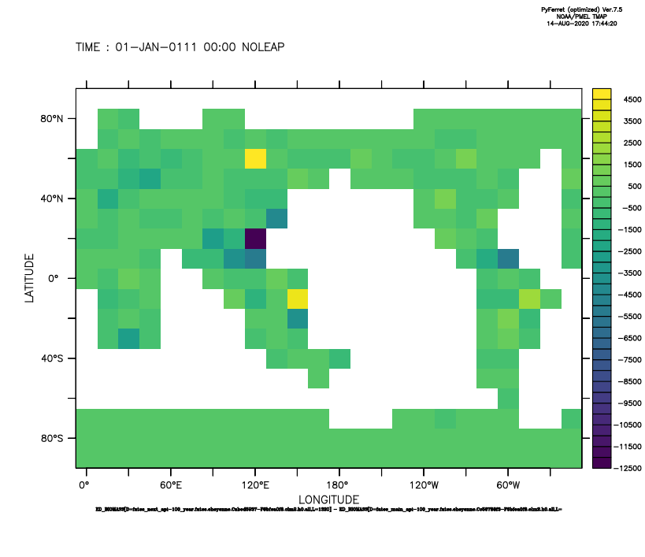
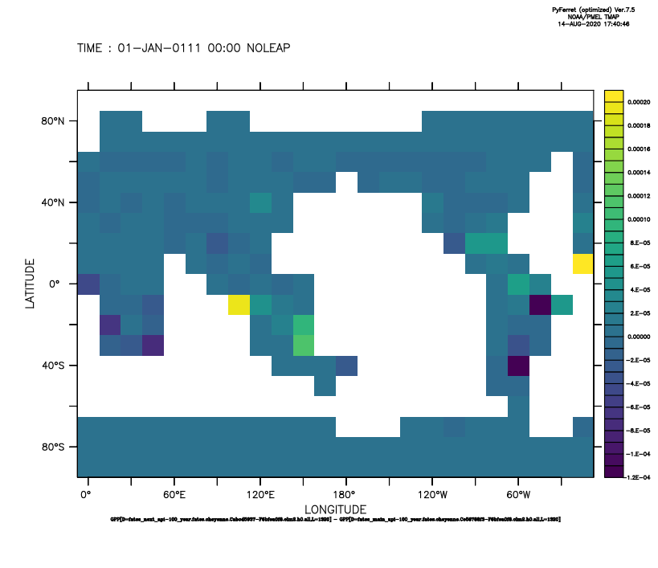
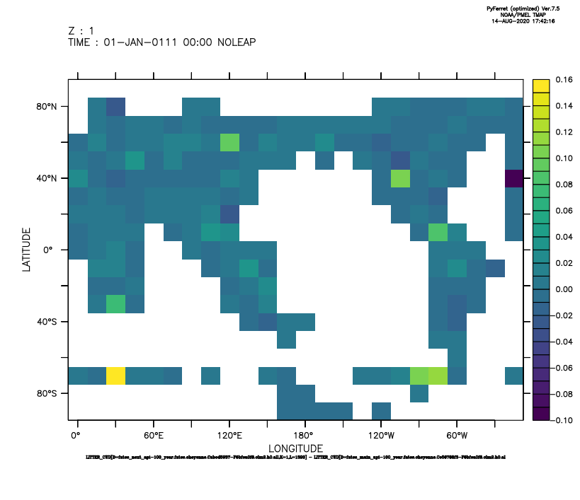
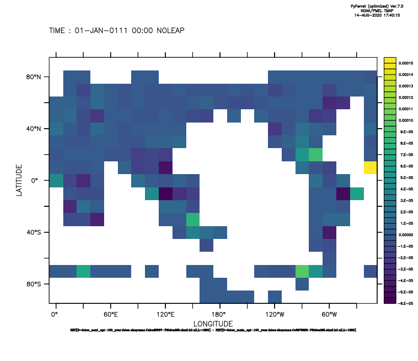
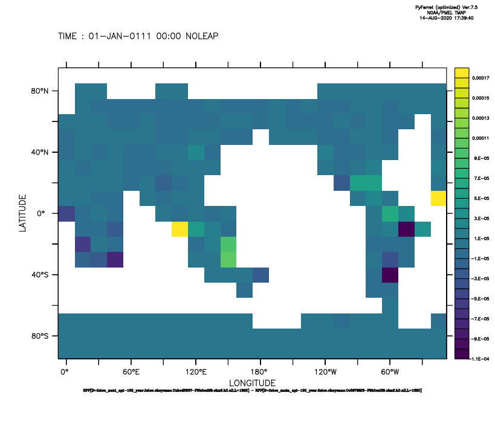
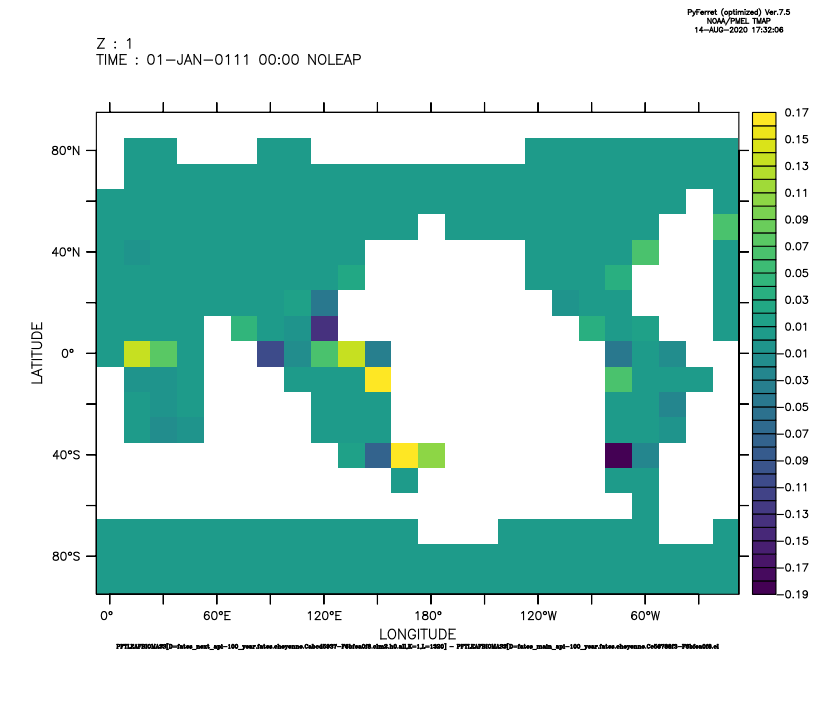
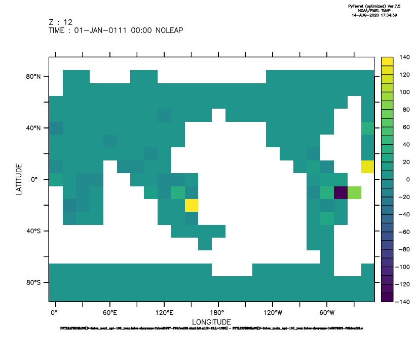

fates_next_api rebase into ctsm1.0.dev093¶
Long-term tests (100 year)¶
Single site test: BCI¶
Case location: lobata workstation
fates_next_api baselines:
Baseline 1 (sci.1.36.0_api.11.2.0):
/home/glemieux/scratch/clmed-cases/fna-rebase.Ce33b4658-F7c065e21.2020-07-27Baseline 2 (sci.1.40.1_api.13.0.1):
/home/glemieux/scratch/clmed-cases/fna-rebase-2.Cabcd5937-F3248e633.2020-08-05
fates_main_api tests:
Test 1 (sci.1.36.0_api.11.2.0):
/home/glemieux/scratch/clmed-cases/fna-rebase.C024b43a8-F7c065e21.2020-07-27Test 2 (sci.1.40.1_api.13.0.1):
/home/glemieux/scratch/clmed-cases/fna-rebase-2.Cd6ef097c-F3248e633.2020-08-05
Gridded test: f10_f10_mg37 resolution¶
All plots are a difference between the fates_main_api test and the fates_next_api baseline for the last time step.
using Makie, AbstractPlotting
using Images, ImageView
using TestImages
┌ Info: Precompiling Makie [ee78f7c6-11fb-53f2-987a-cfe4a2b5a57a]
└ @ Base loading.jl:1278
┌ Info: Precompiling Images [916415d5-f1e6-5110-898d-aaa5f9f070e0]
└ @ Base loading.jl:1278
┌ Info: Precompiling ImageView [86fae568-95e7-573e-a6b2-d8a6b900c9ef]
└ @ Base loading.jl:1278
Gtk-Message: 09:07:39.464: Failed to load module "appmenu-gtk-module"
Gtk-Message: 09:07:39.535: Failed to load module "canberra-gtk-module"
Gtk-Message: 09:07:39.536: Failed to load module "canberra-gtk-module"
Gtk-Message: 09:07:44.496: Failed to load module "appmenu-gtk-module"
Gtk-Message: 09:07:44.566: Failed to load module "canberra-gtk-module"
Gtk-Message: 09:07:44.566: Failed to load module "canberra-gtk-module"
┌ Warning: The call to compilecache failed to create a usable precompiled cache file for ImageView [86fae568-95e7-573e-a6b2-d8a6b900c9ef]
│ exception = ErrorException("Required dependency GTK3_jll [77ec8976-b24b-556a-a1bf-49a033a670a6] failed to load from a cache file.")
└ @ Base loading.jl:1042
┌ Warning: Replacing module `GTK3_jll`
└ @ Base loading.jl:948
Gtk-Message: 09:08:13.362: Failed to load module "appmenu-gtk-module"
Gtk-Message: 09:08:13.446: Failed to load module "canberra-gtk-module"
Gtk-Message: 09:08:13.446: Failed to load module "canberra-gtk-module"
timg = testimage("lighthouse")
Downloading artifact: images
?25l
######################################################################### 100.0%
?25h
typeof(timg)
Array{RGB{Normed{UInt8,8}},2}
image(timg)
img = "Test-Cases/Long-Term/gridded/pftleafbiomass_pft-12_main-next_and_map.png"
loadedimg = load(img)
typeof(loadedimg)
Array{RGBA{Normed{UInt8,8}},2}
imshow(loadedimg)
Dict{String,Any} with 4 entries:
"gui" => Dict{String,Any}("window"=>GtkWindowLeaf(name="", parent, wi…
"roi" => Dict{String,Any}("redraw"=>32: "map(f-mapped image, input-2)…
"annotations" => 2: "input-2" = Dict{UInt64,Any}() Dict{UInt64,Any}
"clim" => nothing
AGB | BIOMASS_CANOPY


BIOMASS_CANOPY

BIOMASS_CANOPY
ED_BIOMASS

GPP

LITTER_CWD

NEP

NPP

PFTLEAFBIOMASS, PFT 1

PFTLEAFBIOMASS, PFT 12

TLAI